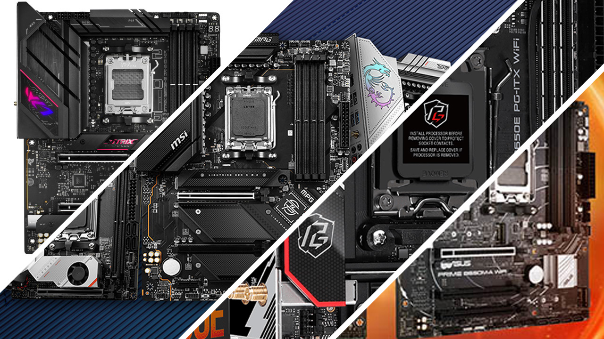

B650 ploÄe i dalje su dobar izbor za većinu korisnika

MatiÄne ploÄe srednje klase nude dobar omjer cijene i mogućnosti za prosjeÄno raÄunalo.
B650 modeli najÄešće imaju dovoljno USB prikljuÄaka, podrÅ¡ku za brze SSD diskove i mogućnost nadogradnje procesora.
Prije kupnje treba provjeriti veliÄinu ploÄe, podržanu memoriju i broj utora koji su potrebni za komponente.